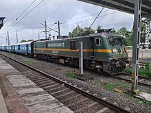
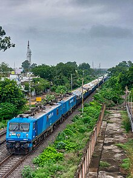
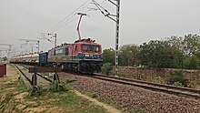
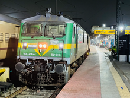

WAG 9 Locomotives
WAG 9

The Indian locomotive class WAG-9 is a class of 25 kV AC electric locomotives that was developed in 1995 by ABB for Indian Railways. The model name stands for broad gauge (W), AC Current (A), Goods traffic (G), 9th generation (9) locomotive. They entered service in 1996. A total of 5140 WAG-9 have been built at Chittaranjan Locomotive Works (CLW), with more units being built at Banaras Locomotive Works (BLW), Bharat Heavy Electricals Limited (BHEL) and Patiala Locomotive Works (PLW). It was the most powerful freight locomotive in the Indian Railways fleet until the introduction of the WAG-12.
The WAG-9 is one of the most successful locomotives of Indian Railways,[peacock prose] serving freight trains since its introduction in 1995. A passenger variant of the WAG-9 was developed, namely the WAP-7 locomotive, by modifying the gear ratio to pull lighter loads at higher speeds. Nowadays,[when?] WAG-9 locomotives are commonly used to haul freight trains.
Introduction

The WAG-9 locomotive is referred to as the "Heavy Haul" freight locomotive of the Indian Railways (IR). It was conceived in response to the extreme growth in the rail freight transportation sector, which is considered to be of great importance to the growth of the economy of India. The need for more electrification and electric locomotives in India had increased. Around 60-65% of the freight haulage of the IR takes place on the electrified section of the Golden Quadrilateral (Indian Railways) and diagonals (which account for 25% of the route). These are very busy routes, so clearance is a necessity. Electrical powers give it a great sectional clearance ability. Thus, these locomotives are important for the Indian Railways.
These locomotives have entered the Western Railway zone of Mumbai. The first 22 units were imported from ABB. Of these, the first six were fully assembled and rest were in kit form. CLW started producing of WAG-9 traction motors on 1 November 1999. The units built by ABB have pantographs with two end horns while the CLW built units have pantographs with single end horns which are common in India. This class had a capacity to MU several units, but IR restricts them to two, because of dynamic loading restriction on most bridges. Regenerative brakes provide about 260 kN of braking effort.
The WAG-9H also has different application software than the WAG-9. The first WAG-9H was commissioned on 30 June 2000. The #30130 prototype was housed at Gomoh (GMO). This was then converted back to standard WAG-9 in 2002. This unit has a livery of twin white stripes on green, instead of yellow stripe on green, seen on the other WAG-9(x)s.
The WAG-9i was introduced in 2010, and was No. 31215. It was homed at the GMO shed. With IGBT, even if one traction motor failed, other traction motors can function with a total output of 5500 hp.
Newer WAG-9 units have "CLW Glorious 60 years" marked on their sides. Some WAG-9(x)s are fitted with a solid cowcatcher while others are fitted with grilled cowcatchers. Some have American style flasher lamps while others have Indian style flasher lamps.[1]
Newer versions of the WAG-9 feature full Insulated-gate bipolar transistor (IGBT) traction control; the debut model was the WAG-9 31248. The class as a whole is denoted by the WAG-9i prefix in its model number, although there is a technical variant of this class named WAG-9H, with the "H" meaning "Heavy".
The WAG-9H/9Hi locomotives are the second heaviest in regular service in India (after the WAG-12), the only freight-dedicated three-phase AC locomotives in the country, and the only electric locomotives in India fitted with IGBT. They are also the freight locomotives with the highest operational speed in India.
It is similar to the WAP-7 class locomotive but features a different gear ratio, which makes it suitable for heavy freight operations. In November 1998, the Chittaranjan Locomotive Works (CLW) started producing these with indigenous components. The first of which, named Navyug (New Era), was produced on 14 November 1998. Like the WAP-5 units, the WAG-9 has GTO thyristor converters and three-phase asynchronous motors.
Variants

The following variants are built from the WAG-9:
WAG-9: Original version.
WAG-9H: Heavy version with additional ballast, total weight: 132 t.
WAG-9i: Version with IGBT Technology.
WAG-9Hi: Version with additional ballast and IGBT Technology.
WAG-9HC: Heavy version with brake rigging.
EF9K/WAG-9HH: Heavy Version with 9000 HP
EF12K/WAG-9 Twins: A 12000 hp variant developed by CLW to equal WAG-12 horsepower.
Performance

WAG-9 has quickly become one of the important locos in the Indian railways. With its higher power, this locomotive has replaced WAG-7 which was the main electric loco before WAG-9's arrival. Applications where twin WAG-7s were required are now handled by a single WAG-9. This includes both leading a long consist and for banking operations. The regenerative braking capabilities of WAG-9 has also helped reduce the electricity consumption. The original WAG-9 had some wheel slippage incidents while hauling heavy load. This was rectified through the introduction of WAG-9H and subsequently using WAG-9i. This has significantly reduced the issue that were associated with the original version. Nowadays, it is quite common to see special passenger trains hauled by WAG-9 locomotives.
New Katni Jn. WAG-9HC hauling Asansol-Hatia Express
Chittaranjan Locomotive Works (CLW) turned out its first 9,000 hp WAG-9 freight locomotive on 31 March 2019, the last day of the financial year. This 9,000 hp version of the WAG-9H has been classified by IR as WAG-9 HH. The first H stands for higher axle load and the second H stands for the higher power rating. The class has been allocated a block of serial numbers starting with 90001, the number of the first unit. The decision to upgrade the power output of the WAG-9 was taken to partly meet the demands of the upcoming electrified Western Dedicated Freight Corridor (WDFC). The upgraded locomotive class will also augment hauling capacity on the existing network of the Indian Railways.